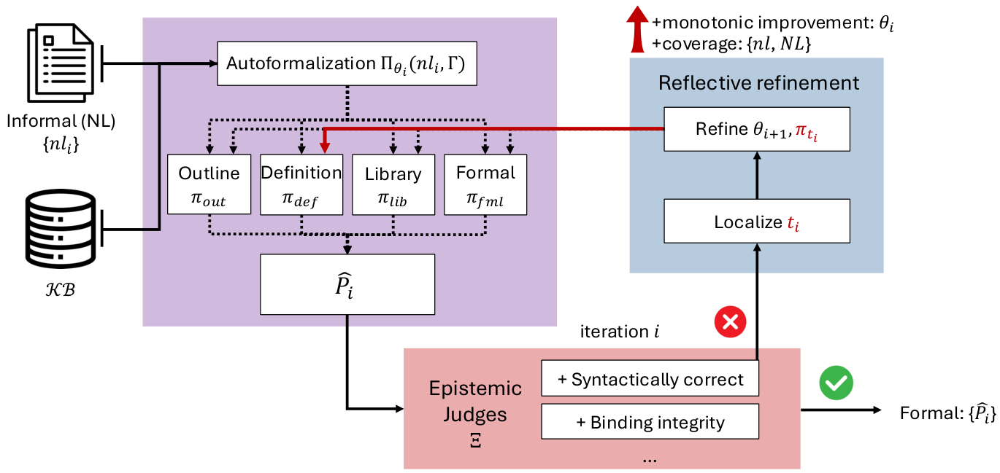
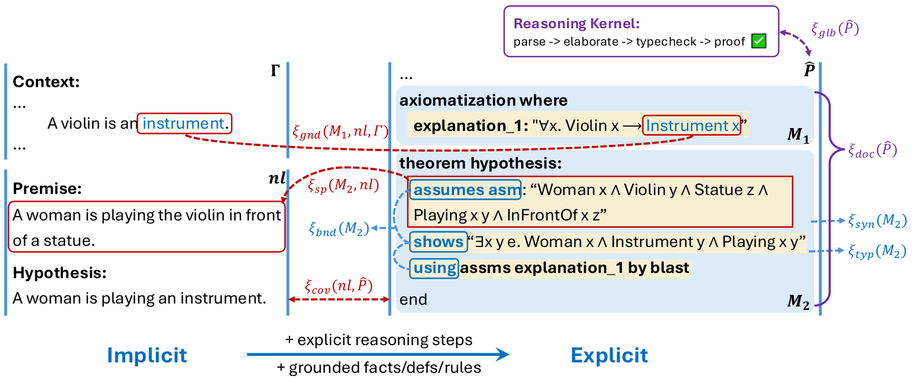

Evaluates a proxy-judge refinement loop for autoformalization on miniF2F and ProofNet in Lean 4, with kernel elaboration deciding syntax, typing, and binding checks.
Abstract
Autoformalization (AF) requires both prover acceptance and fidelity to an informal source, but prover acceptance alone cannot establish fidelity, and expert-validated reference formalizations are costly to obtain. We introduce a reference-free proxy-judge framework, which separates correctness into grounding, statement faithfulness, coverage, and inference, and a theory of how imperfect checks shape iterative refinement. We establish three results. First, for a fixed sequence of candidates, an added proxy's false-positive and false-negative rates bound its effect on the pass-but-wrong rate. Second, damage to a correct formalization requires a false rejection that exposes it to further refinement, and harmful revisions are then retained through unguarded changes, missed changes, or prover progress that overrides judge warnings. Third, a decomposition of the final pass rate distinguishes continued refinement, generation of new candidates, and their success in passing the checks. We instantiate the framework with eight proxies and test these predictions on ProofNet and miniF2F in Lean 4 and on e-SNLI and ProntoQA in Isabelle/HOL. Under single-proxy removal, no prediction written before the runs is contradicted, and all traced breaks follow the identified failure routes. The results connect proxy reliability to the benefits, risks, and limits of refinement without reference formalizations.
Problem
In autoformalization, prover acceptance does not establish fidelity to the informal source. Expert reference formalizations are costly to produce and not unique, so exact-match evaluation penalizes valid alternatives.
Approach
A reference-free framework splits correctness into eight proxy judges at global, per-module, and cross-domain scopes. The scopes cover elaboration, document structure, syntax, typing, binding, grounding, statement faithfulness, and coverage. A reflective loop repairs the worst-scoring axis at each iteration. Theory bounds the pass-but-wrong rate in terms of proxy false-positive and false-negative rates, characterizes how correct formalizations get damaged, and decomposes the final pass rate.

Figure 1: Reflective Refinement Loop. At each iteration the system proposes a candidate formalization, scores it on a fixed set of property axes, finds the worst-scoring axis, and applies a repair targeted to that axis.

Figure 2: Implicit-to-Explicit Transition. Correctness is checked at three scopes: the whole object, each module, and the alignment back to the informal source nl and context \Gamma . Each scope has its own judge.
Results
Across seven backbones on Lean 4 miniF2F and ProofNet and Isabelle e-SNLI and ProntoQA, refinement improves pass rate. For GPT-5.4, ProofNet rises from 68.1 to 88.5. Decomposed judging beats scalar judging, most clearly on ProofNet and e-SNLI; no pre-registered prediction is contradicted under single-proxy removal.